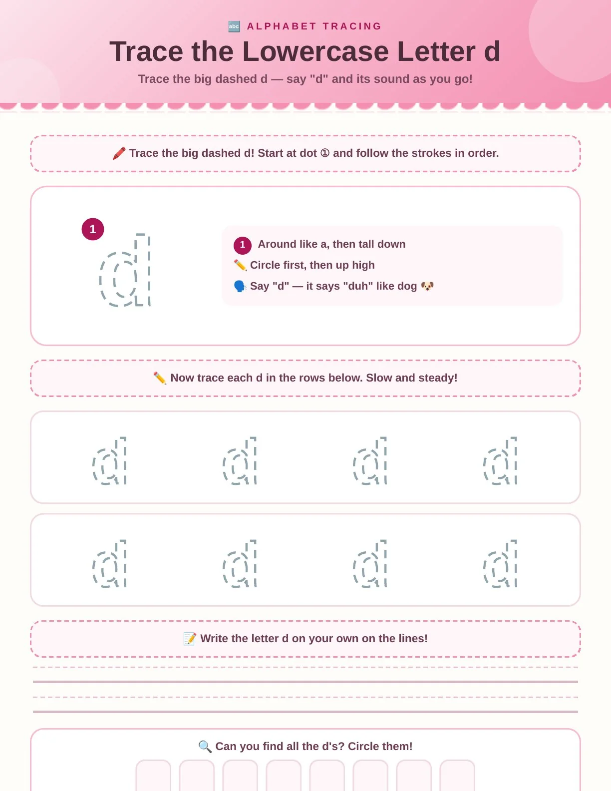

Lowercase Letter D Free Printable Lowercase Letter D Tracing Activity For Kids
Small d starts the word dog in every storybook, and hides inside ladder and hand too. This free printable lowercase letter d tracing worksheet gives toddlers and preschoolers a fun, no-prep way to practice the ball-and-bat shape — print it at home and trace the letter d through play.
Quick Answer
This free printable helps toddlers and preschoolers practice tracing the lowercase letter d — a little circle with a tall line standing behind it. The worksheet includes large guided tracing lines, directional arrows, and fun practice rows that teach the order that matters most for this letter: circle first, then line. Print as many copies as you need at home, no signup required — tracing that circle-and-line again and again is how little hands build fine motor skills and letter recognition.
At a Glance
- Ages: Toddlers and preschoolers
- Activity: Tracing lowercase d — a little circle with a tall line standing behind it
- Skills: Letter d formation and pencil control
- Format: Printable tracing worksheet (PDF)
- Cost: Free, no signup
✏️ Trace The Letter D
Use the printable to help your child trace the lowercase letter d, drawing the little circle first and the tall line second. That order is the whole secret of d — circle first means d, line first means b — and it builds confidence with early letter formation and writing skills.
Free Lowercase Letter D Tracing Printable

How To Use This Printable
- Download and print the letter d pages on letter-size paper. The print button opens the full-size page in a new tab if you prefer to print from there.
- Say the letter name and sound together before your child starts: “D says /d/, like dog, duck and dinosaur — and in storybooks, those words start with this small d.”
- Trace slowly: little circle first, sitting on the ground line, then the tall line up and down behind it. Say “ball, then bat” as each letter takes shape.
- Play I-spy with the letter d around the house — look inside words too, on book covers and boxes: ladder, puddle, hand.
🔤 All About Small d
Small d is a ball and a bat — the mirror image of b. Draw the ball first: a little circle sitting on the ground line and reaching up to the middle line. Then, starting from the top of the circle, draw the bat: a tall straight line up to the top line and back down to the ground.
Small d is the other half of the famous b-and-d mix-up, and the fix is in the order. D starts with the ball — the circle. B starts with the bat — the line. If the circle came first, it is a d.
The letter d makes the /d/ sound in dog and duck, and it hides inside and at the end of words too — there is a d in ladder, in puddle, and at the end of hand. Most of the d's your child will ever read are this small one, doing the everyday work inside storybook words.
Why Trace Lowercase Letters?
Children meet lowercase letters far more often than capitals — nearly every word in a storybook is lowercase — and d is everywhere, ending hand, bed and bird as well as starting dog. It also teaches two heights at once: a middle-height circle standing next to a top-height line. Practicing the letter d also supports fine motor control, letter formation, and early handwriting development.
🎁 Keep Exploring Free Learning Activities
Discover more printable activities, toddler resources, and learning ideas created for busy parents.
🎁 View All Free Resources❓ Lowercase Letter D Tracing FAQ
Is this lowercase letter D tracing printable really free?
Yes — this lowercase letter d tracing printable is 100% free to download and print at home. No signup and no payment needed. Just tap the download button and print as many copies as you like — repetition is how the ball-then-bat order becomes automatic.
What ages is this printable best for?
It is made for toddlers and preschoolers. Small d is a friendly letter — a circle and a line — though it is famous for being confused with b, so a grown-up nearby helps at first. Younger toddlers trace happily with a grown-up beside them, while older preschoolers can usually manage the page on their own.
How can we practice the small letter d at home?
Say “ball, then bat” while your child traces — the circle always comes first for d. Point out small d at the start of dog and duck in storybooks, and at the end of hand and bed. A few short, playful sessions each week beat one long one.
🔗 More Free Printables You’ll Love
- Free Alphabet Coloring Pages Free printable alphabet coloring pages for little learners.
- Free Uppercase Letter D Tracing Free printable uppercase letter d tracing for little learners.
- Free Lowercase Letter E Tracing Free printable lowercase letter e tracing for little learners.
- Free Lowercase Letter F Tracing Free printable lowercase letter f tracing for little learners.